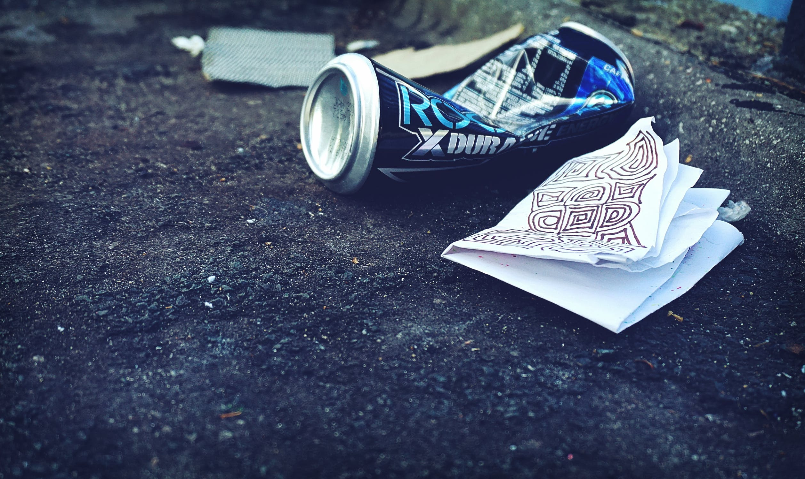

You relunctantly accept their offer of trash grub and start to eat up. Surprisingly, it is not the absolute worst. Don't be mistaken, it is horrible and you are eating literal trash but considering the circumstances, it could be worse. The raccoons see this as a true confirmation that you're chill and invite you to hang out with them. It would be nice to have some company in this large city, but you're not sure how much longer you can keep up this raccoon facade and don't know how they'll react to you being a cat. Do you stay with the raccoons or leave?